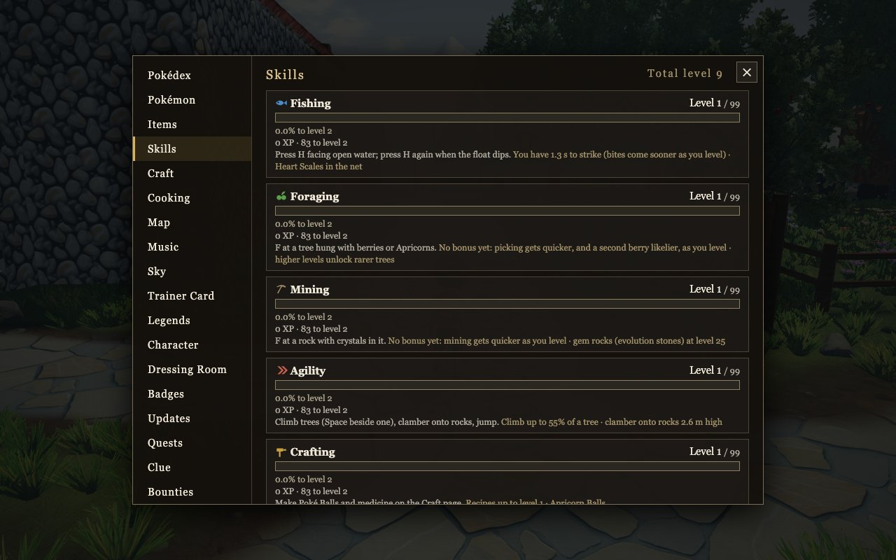
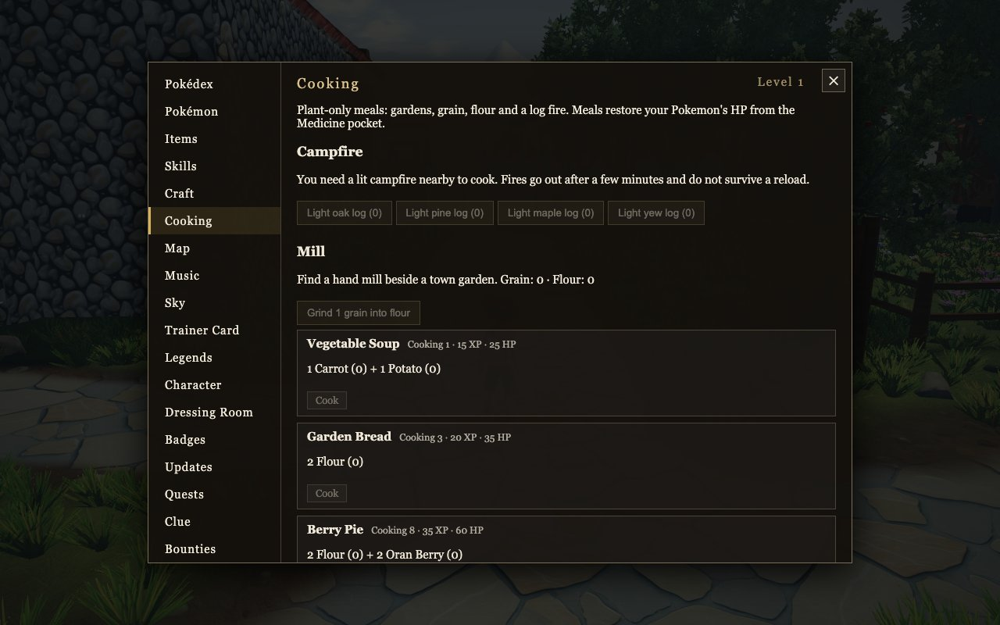
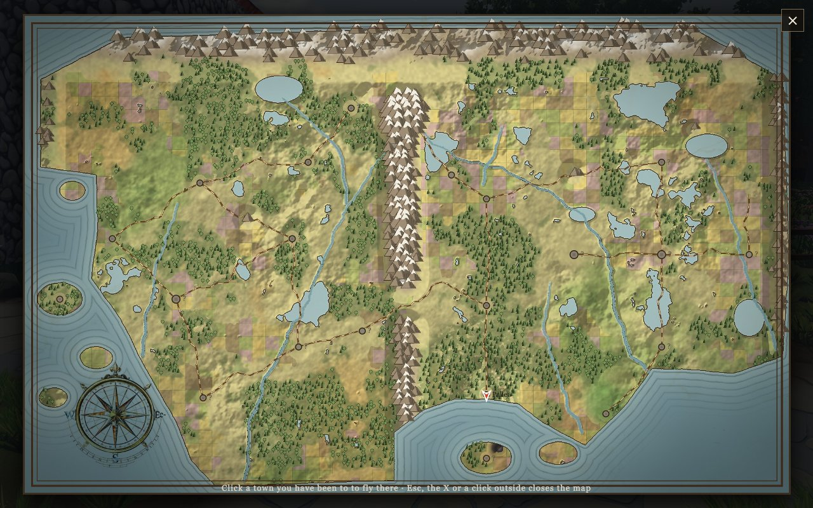
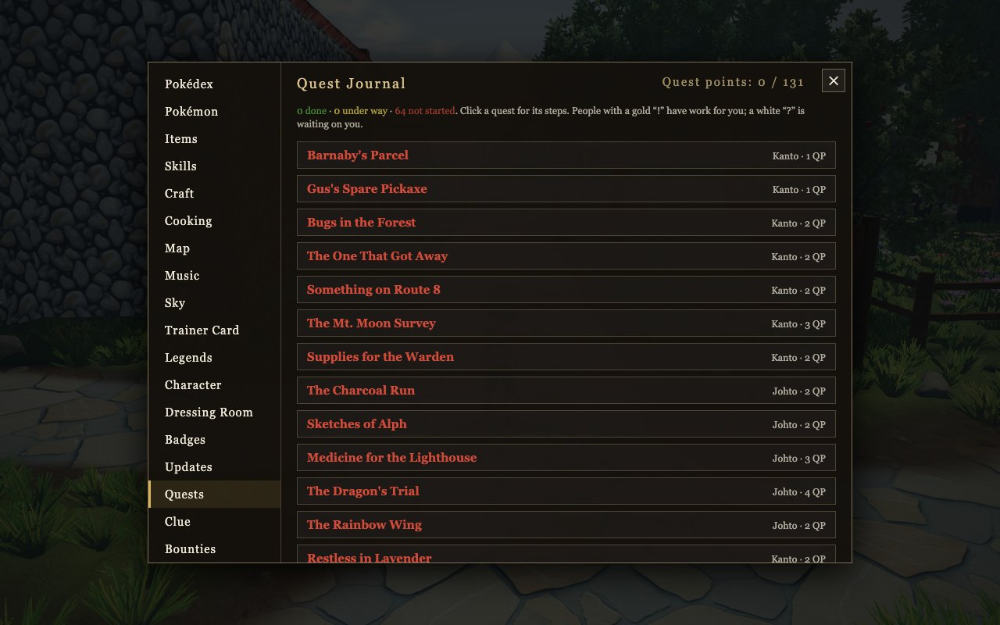

Build a team, find your favorite place, and share the journey.
Walk through towns and forests with your lead Pokémon beside you. Open the map when it's time to head somewhere new, and fly back to any town you have visited. Two regions, Kanto and Johto, hold towns, forests, and interiors to step inside.
Lock on, dodge attacks, choose moves, and throw a Poké Ball. Gym Leaders put your team to the test.
Fishing, Foraging, Mining, Agility, Crafting, Woodcutting, Firemaking, and Cooking grow from level 1 to 99 just by doing them. Gather with F, cast a line with H, and climb or jump to train Agility.

Actual gameplayCast at the sea, lakes, ponds, and rivers. Wait for the float to dip, strike, and reel. A hooked water Pokémon starts a battle.
Harvest grain, carrots, potatoes, and cabbage. Grind grain at the mill, light some logs, and cook Vegetable Soup, Garden Bread, Berry Pie, or Vegetable Stew. Meals restore your Pokémon's HP.

Actual gameplayPress B to climb onto a Pokémon that can carry you. Rapidash is the fastest thing on legs, Rhyhorn plows through brush and fences, and Onix and Steelix carry you on their heads. Flying Pokémon take you across the map, and Water Pokémon carry you over the swell.

Actual gameplayKeep six Pokémon in your party, choose your lead, and manage the rest from the PC in a Pokémon Center. Set held items, share experience with the Exp Share, and keep your lead walking beside you.
Track every species seen and caught, with a 3D model thumbnail for each. Sixteen badges wait across Kanto and Johto.
The Quest Journal leads through errands and mysteries like Barnaby's Parcel, The One That Got Away, and Medicine for the Lighthouse, plus treasure trails, bounty boards, and area diaries.

Actual gameplayExplore, fish at the water, and discover the people and places along the way.
Meet other trainers in the shared world. Trade directly or try Wonder Trade. Your account keeps your saved progress.